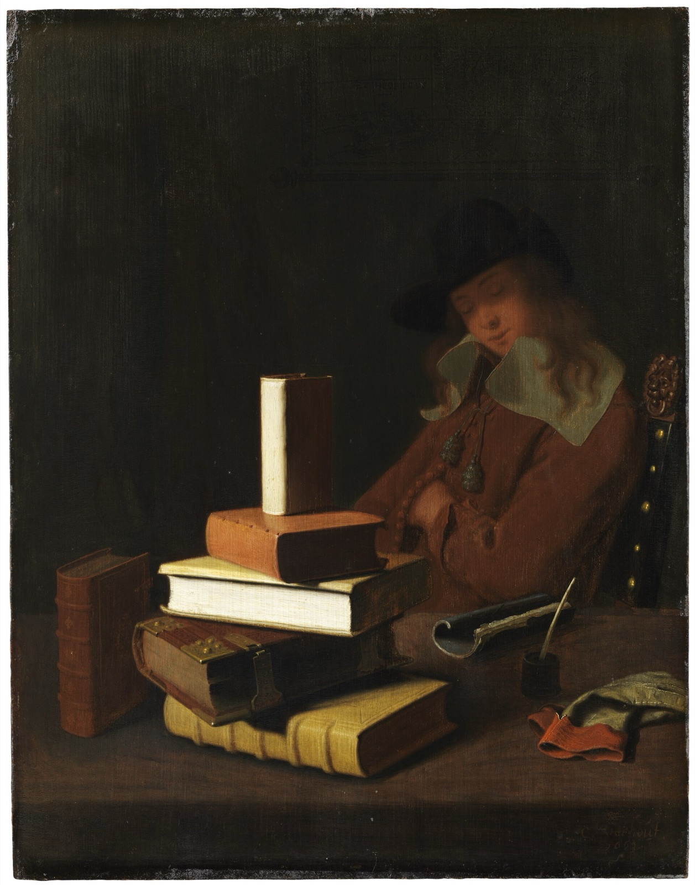

잠을 줄이면 공부에 손해일까? — 잠이 기억과 뇌를 지키는 방식
"한 시간만 덜 자면 한 단원을 더 볼 수 있는데."
시험 전날 새벽 두 시, 책상 위 시계와 남은 쪽수를 번갈아 봅니다. 잠은 시험 끝나고 몰아서 자면 된다고 계산을 끝내고 한 단원을 더 넘깁니다. 다음 날 아침 시험지 앞. 분명히 새벽에 봤던 공식인데 앞부분만 떠오르고 뒤가 비어 있습니다. 일찍 잤다던 옆자리 친구는 그 문제를 풀고 있습니다. 시험이 끝난 복도에서 "밤새 봤는데 하나도 안 떠오르더라"는 말이 오갑니다.

새벽의 그 계산에는 틀린 항목이 하나 있습니다. 잠을 공부가 멈추는 시간으로 쳤습니다. 잠은 공부의 뒷공정입니다. 낮에 넣은 것은 밤에 자리를 잡습니다. 밤에 치우지 못한 찌꺼기는 다음 날 머리를 둔하게 합니다.
잠을 줄여 얻은 한 시간은 그날 배운 것을 굳히는 시간과 다음 날 새로 담을 자리를 비우는 시간에서 빠져나갑니다. 알아 둘 용어는 둘입니다. 배운 것을 오래 가는 기억으로 굳히는 과정인 기억 공고화(memory consolidation), 그리고 잠든 뇌가 노폐물을 씻어 내는 통로인 글림프 시스템(glymphatic system)입니다.
잠든 뒤에도 공부는 끝나지 않는다
잠과 기억의 관계를 처음 잰 실험은 100년 전에 나왔습니다. 1924년 미국의 심리학자 젠킨스와 댈런배크는 두 사람을 거의 두 달 동안 실험실에서 지내게 하면서 뜻 없는 철자를 외우게 했습니다. 그런 뒤 한 시간, 두 시간, 네 시간, 여덟 시간을 자거나 깨어 있는 채로 보내게 하고 얼마나 남았는지 물었습니다. 같은 시간이 지나도 잠을 잔 뒤에는 잊은 양이 적었습니다. 두 사람은 망각이 시간이 흘러 저절로 생기는 것이 아니라, 새로 들어온 것이 옛것을 밀어내서 생긴다고 결론 내렸습니다[1].
피험자가 둘뿐이라 수치를 그대로 믿기는 어렵습니다. 질문을 세운 실험으로 보는 편이 맞습니다. 답이 모이는 데 90년이 걸렸습니다. 독일 튀빙겐 대학의 얀 보른 연구진이 2013년에 정리한 설명은 이렇습니다. 뇌는 낮에 배운 것을 먼저 안쪽의 해마에 임시로 담습니다. 깊은 잠, 그러니까 뇌파가 1초에 한 번 꼴로 느리게 오르내리는 서파수면에 들면 해마가 그 기억을 되풀이해 재생합니다. 느린 뇌파에 맞춰 짧고 빠른 파형과 해마의 잔물결이 겹치면서, 뇌는 임시로 보관한 기억을 대뇌 겉질의 오래 가는 저장소로 옮겨 이미 아는 것과 엮습니다. 연구진은 이를 능동적 시스템 공고화라고 부릅니다[1].
보른 연구진은 재생이 실제로 일어나는지를 냄새로 확인했습니다. 2007년 이 연구진은 사람들에게 장미 향을 맡으며 카드 위치를 외우게 한 뒤, 서파수면에 들었을 때 그 향을 다시 흘려보냈습니다. 다음 날 아침, 자는 동안 향을 맡은 쪽이 카드 위치를 더 잘 기억했고, 뇌 영상에서는 잠든 사이 해마가 향에 반응했습니다[2]. 2013년에는 느린 뇌파가 올라가는 순간에 맞춰 작은 소리를 들려주자 서파가 커지고 단어 기억이 좋아졌습니다. 박자가 어긋나게 들려주면 아무 효과가 없었습니다[3]. 잠든 뇌는 낮에 배운 것을 되감기하고 있었습니다.
못 잔 뇌는 새것을 담지 못한다
밤샘의 손해는 저장에서 끝나지 않습니다. 입력에서도 납니다. 2007년 미국 하버드 의대의 연구진은 건강한 젊은이들을 하룻밤 재우지 않은 뒤 사진을 외우게 하고 뇌 활동을 찍었습니다. 잠을 못 잔 뇌는 외우는 동안 해마가 뚜렷하게 덜 움직였고, 뒤이은 시험에서 기억해 낸 사진도 적었습니다. 연구진은 학습 전의 잠이 새 기억을 받아들일 준비를 시키며, 그 잠이 빠지면 새 경험을 새기는 능력이 크게 떨어진다고 적었습니다[4].
새벽에 넘긴 그 단원은 두 번 손해를 봅니다. 해마가 제대로 받지 못했습니다. 받은 것을 재생할 밤도 없었습니다. 공부한 느낌은 남지만 다음 날 꺼낼 수 있는 내용은 적습니다.
잠든 사이 뇌는 하루치 찌꺼기를 씻는다
잠이 하는 일은 기억 정리 말고도 있습니다. 뇌는 깨어 있는 동안 대사 찌꺼기를 쌓습니다. 그중 베타아밀로이드는 알츠하이머병 환자의 뇌에서 덩어리로 나타나는 단백질입니다. 2013년 미국 로체스터 대학의 네데르고르 연구진은 살아 있는 생쥐의 뇌를 들여다보다가, 생쥐가 잠들었을 때와 마취 상태일 때 뇌세포 사이의 공간이 60퍼센트 넓어지는 것을 보았습니다. 넓어진 틈으로 뇌척수액이 밀려들어 세포 사이 액체와 섞였고, 베타아밀로이드를 깨어 있을 때보다 두 배 빠르게 씻어 냈습니다[5]. 뇌에는 몸의 림프관에 해당하는 배수로가 없어 찌꺼기를 어떻게 치우는지가 오래 수수께끼였습니다. 이 연구의 요지는 잠이 그 배수 통로를 연다는 것입니다.
보스턴 대학 연구진은 사람에게서도 비슷한 현상을 관찰했습니다. 2019년 이 연구진은 사람이 자는 동안 뇌파와 혈류와 뇌척수액의 움직임을 동시에 찍었습니다. 비렘수면에서 느린 뇌파가 한 번 지나가면 뇌의 혈류가 줄고, 이어서 뇌척수액이 큰 파도로 밀려들었습니다. 셋은 같은 주기로 움직였습니다[6]. 기억을 옮기는 그 느린 뇌파가 뇌척수액의 흐름과도 맞물려 있었습니다.
2018년 미국 국립보건원 연구진은 건강한 성인 20명을 하룻밤 재우지 않고 뇌 양전자단층촬영을 했습니다. 단 하룻밤인데도 오른쪽 해마와 시상에서 베타아밀로이드가 유의하게 늘었습니다[7]. 20명이라 규모는 작습니다. 늘어난 자리에는 기억을 담는 해마가 들어 있었습니다.
오래 쌓이면 어떻게 되는지는 영국 공무원 7,959명을 25년 동안 따라간 조사가 보여 줍니다. 2021년 파리 대학의 사비아 연구진이 분석한 결과, 50세에 하루 6시간 이하로 자던 사람은 7시간 자던 사람보다 뒤에 치매 진단을 받을 위험이 22퍼센트 높았고, 60세에 그랬던 사람은 37퍼센트 높았습니다. 50대부터 70대까지 내내 짧게 잔 사람은 30퍼센트 높았습니다[8]. 관찰 연구라 잠이 원인이라고 단정할 수는 없습니다. 연구진은 초기 치매가 잠을 먼저 망가뜨렸을 가능성을 줄이려고 진단 수십 년 전의 잠을 봤습니다. 그래도 상관관계입니다. 다만 생쥐 실험, 사람의 하룻밤 실험, 25년 추적 조사의 결과는 같은 방향입니다.
줄여도 티가 안 나는 것이 함정이다
잠을 줄인 사람은 대개 자기가 멀쩡하다고 느낍니다. 2003년 펜실베이니아 대학의 반 동언 연구진은 건강한 성인 35명을 실험실에 두 주 동안 머물게 하며 하루 4시간, 6시간, 8시간만 침대에 있게 했습니다. 하루 6시간씩 두 주를 잔 집단의 주의력과 작업 기억 성적은 날마다 조금씩 떨어져, 두 주가 끝날 무렵에는 하룻밤을 꼬박 새운 사람과 비슷한 수준이 됐습니다. 하루 4시간 집단은 이틀 밤샘 수준까지 떨어졌습니다. 그런데 스스로 매긴 졸림 점수는 처음 며칠 오르고는 거의 그대로였습니다. 연구진의 표현으로, 피험자들은 자기 능력이 계속 떨어지고 있다는 사실을 대체로 알지 못했습니다[9].
하루 6시간이면 시험 기간에는 많이 잔 축에 듭니다. 그 6시간이 두 주 이어지면 하룻밤 밤샘과 맞먹는데, 당사자는 그것을 모릅니다. "나는 잠을 줄여도 괜찮은 체질"이라는 말이 흔한 것도 이 때문입니다. 괜찮다고 느끼는 감각이 먼저 둔해집니다.
같은 실험에서 연구진은 결손이 쌓이는 기준선도 계산했습니다. 하루에 깨어 있는 시간이 약 16시간을 넘는 만큼 주의력 실수가 거의 직선으로 늘었습니다[9]. 하루 8시간을 자면 그 선에 거의 닿고, 6시간을 자면 날마다 두 시간 남짓 선 밖으로 나갑니다. 밤샘 없이도 그 두 시간이 두 주 동안 쌓였습니다.
성적은 시험 전 한 달의 잠이 정한다
시험 전날만 잘 자면 된다는 생각은 자료와 맞지 않습니다. 2019년 MIT 연구진은 화학 수업을 듣는 학생 88명에게 한 학기 동안 손목 활동 측정기를 채우고, 퀴즈 아홉 번과 중간고사 세 번의 점수를 잠과 맞춰 봤습니다. 잠의 길이와 질과 규칙성은 합쳐서 성적 차이의 24퍼센트 남짓을 설명했습니다. 그런데 시험 전날 밤의 잠은 세 번의 중간고사 어느 것과도 관련이 없었습니다. 관련이 있었던 것은 시험 전 한 달 동안의 평균 수면이었고, 가장 뚜렷한 단일 지표는 들쭉날쭉함이었습니다. 자는 시간이 날마다 크게 달라지는 학생일수록 점수가 낮았습니다[10].
이것도 상관 연구입니다. 측정기의 수면 질 계산법은 제조사가 공개하지 않았습니다. 다만 결과는 앞의 실험들과 맞습니다. 뇌는 배운 그날 밤에 기억을 굳히고 찌꺼기도 매일 밤 치웁니다. 모자란 잠은 본인이 모르는 사이에 쌓입니다. 시험 전날 하루 잘 자는 것으로는 이것을 되돌릴 수 없습니다.
할 일은 세 가지입니다. 공부한 날 밤이 그 공부의 마지막 단계이니, 어려운 내용을 본 날일수록 잠을 깎지 않습니다. 시험이 다가오면 자는 길이가 날마다 널뛰지 않게 먼저 붙듭니다. 측정기를 찬 학생들에게서 성적과 가장 또렷하게 이어진 것이 길이보다 들쭉날쭉함이었기 때문입니다. 전날 밤에 몰아 자서 만회하려는 계획은 지웁니다. 그 밤 하나는 성적과 관련이 없었습니다.
필자 한마디
새벽까지 책상을 지킨 밤을 두고 자신을 탓할 일은 아닙니다. 그 밤에 공부를 더 한 것은 사실입니다. 잠이 그 공부의 일부라는 것은 아무도 가르쳐 주지 않았습니다.
오늘 외운 것은 오늘 밤 내 뇌가 굳힙니다. 깨어 있는 동안 넣은 것을 잠든 동안 정리하고 씻어 냅니다. 잠을 뺀 공부는 공부한 느낌만 남깁니다.
한 시간을 더 깎을지 고민될 때는 그 한 시간이 어느 공정에서 빠지는지 따져 보면 됩니다.
뇌는 배운 것을 해마에 임시로 담았다가 깊은 잠에서 되풀이 재생하며 오래 가는 자리로 옮깁니다. 잠을 못 잔 뇌는 다음 날 새것을 담는 힘부터 떨어집니다. 그 사이 잠든 뇌는 느린 뇌파 박자로 뇌척수액을 밀어 넣어 하루치 찌꺼기를 씻어 내고, 짧은 잠이 수십 년 쌓이면 치매 위험과 함께 갑니다. 하루 6시간이 두 주 이어지면 하룻밤 밤샘과 맞먹지만 본인은 모르고, 성적과 이어지는 것은 한 달의 평균과 규칙성이고, 전날 밤 하루는 관련이 없었습니다.
오늘 밤 책을 덮는 시각을 정해 둡니다. 그 시각에 공부의 마지막 공정이 시작됩니다.
참고문헌
- Rasch, B., Born, J. About Sleep's Role in Memory. Physiological Reviews 93(2): 681–766, 2013 (젠킨스·댈런배크 1924년 실험의 설계·결과와 능동적 시스템 공고화 설명은 이 리뷰에서). 링크 ↩
- Rasch, B., Büchel, C., Gais, S., Born, J. Odor cues during slow-wave sleep prompt declarative memory consolidation. Science 315(5817): 1426–1429, 2007. 링크 ↩
- Ngo, H.-V. V., Martinetz, T., Born, J., Mölle, M. Auditory closed-loop stimulation of the sleep slow oscillation enhances memory. Neuron 78(3): 545–553, 2013. 링크 ↩
- Yoo, S.-S., Hu, P. T., Gujar, N., Jolesz, F. A., Walker, M. P. A deficit in the ability to form new human memories without sleep. Nature Neuroscience 10(3): 385–392, 2007. 링크 ↩
- Xie, L., Kang, H., Xu, Q., 외 11인(교신 Nedergaard, M.). Sleep drives metabolite clearance from the adult brain. Science 342(6156): 373–377, 2013. 링크 ↩
- Fultz, N. E., Bonmassar, G., Setsompop, K., 외(교신 Lewis, L. D.). Coupled electrophysiological, hemodynamic, and cerebrospinal fluid oscillations in human sleep. Science 366(6465): 628–631, 2019. 링크 ↩
- Shokri-Kojori, E., Wang, G.-J., Wiers, C. E., 외(교신 Volkow, N. D.). β-Amyloid accumulation in the human brain after one night of sleep deprivation. Proceedings of the National Academy of Sciences 115(17): 4483–4488, 2018. 링크 ↩
- Sabia, S., Fayosse, A., Dumurgier, J., 외(교신 Singh-Manoux, A.). Association of sleep duration in middle and old age with incidence of dementia. Nature Communications 12: 2289, 2021. 링크 ↩
- Van Dongen, H. P. A., Maislin, G., Mullington, J. M., Dinges, D. F. The cumulative cost of additional wakefulness: dose-response effects on neurobehavioral functions and sleep physiology from chronic sleep restriction and total sleep deprivation. Sleep 26(2): 117–126, 2003. 링크 ↩
- Okano, K., Kaczmarzyk, J. R., Dave, N., Gabrieli, J. D. E., Grossman, J. C. Sleep quality, duration, and consistency are associated with better academic performance in college students. npj Science of Learning 4: 16, 2019. 링크 ↩